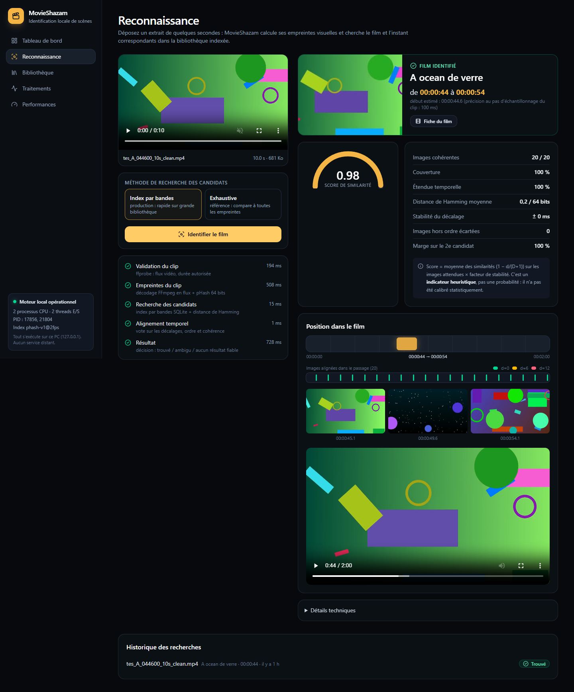
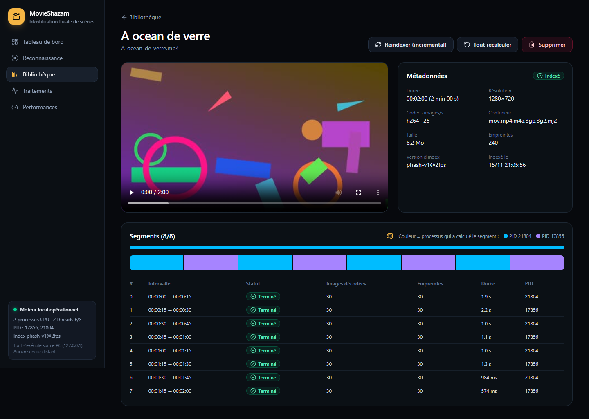

Everything you need to truly understand the project: video, perceptual hashing, search indexes, temporal alignment, parallel & concurrent programming in Python, SQLite, FastAPI, Next.js, testing and benchmarking — explained from first principles, then mapped onto the real code.
This guide has two goals: make you understand every concept the project relies on, starting from zero, and show exactly how and where each concept is implemented in the code. Each chapter starts with the theory, then has a "In MovieShazam" part pointing at real files.
The user interface and the academic documents of the project are in French (as required by the assignment); this guide is in English. The appendix maps every French term you will say during the presentation to its English equivalent (e.g. empreinte = fingerprint, décalage = offset, speedup = accélération).
Boxes like this one contain the sentence you should be able to say out loud without notes.
You have a library of films that you own (MP4, MKV, …). Someone gives you a 5–20 second clip. MovieShazam answers: which film is it from, and at what exact moment? For example: "Océan de Verre, from 00:00:44 to 00:00:54, similarity score 0.98". If the clip is not in the library it must say so honestly, and if the same passage exists in two places it must say the result is ambiguous instead of guessing.
The name is a nod to Shazam, which identifies music from a few seconds of audio. MovieShazam does the same with images instead of sound, and only inside your local library (it does not know every film in the world).
We turn every sampled video frame into a 64-bit perceptual fingerprint that changes only a little when the image is re-encoded. A clip is identified when many of its fingerprints match a film's fingerprints with the same time offset — one look-alike frame is never enough.
| Constraint | Consequence in the design |
|---|---|
| One Windows PC, no GPU, no cloud, no remote workers, no custom sockets | Parallelism comes from processes on the same machine; browser and backend talk over plain HTTP on 127.0.0.1; progress is shown by HTTP polling. |
| 16 GB RAM target (our dev PC actually has 8 GB) | Never load a film in memory: FFmpeg streams tiny 64×64 frames; workers return a few KB; bounded queues everywhere. |
| No AI model, no training | Classic signal processing: DCT-based perceptual hash + a temporal-consistency vote. |
| Real data, no fake results | A deterministic generator creates our own films and clips with ground truth; every number is measured. |
| Course: multiprocessing for CPU-bound work, threading for blocking I/O | ProcessPoolExecutor for segments; threads for everything that waits: FastAPI's request threads, a ThreadPoolExecutor for files, background job threads and one SQLite writer thread. No asyncio in our code. |
A video is a sequence of still images called frames, shown quickly — typically 24, 25 or 30 frames per second (fps). Each frame is a grid of pixels: 1280×720 ("720p") has 921,600 pixels; 1920×1080 ("1080p") has about 2 million. A two-hour 1080p film at 24 fps has 172,800 frames — about 1 TB if stored uncompressed. That is why video is always compressed.
codec=h264,
format=mov,mp4,m4a,3gp,3g2,mj2).Consecutive frames are very similar, so codecs store most frames as differences:
The sequence from one keyframe to the next is a GOP (group of pictures), typically 1–10 seconds. Two consequences matter for us:
-ss is placed before -i. This is what lets
each worker process start decoding in the middle of the film, at the beginning of its segment.Decoding 720p H.264 means reconstructing ~0.9 million pixels per frame, 25 times per second, reading reference
frames from memory and writing new ones. Computing our hash on a 32×32 image costs microseconds. In MovieShazam, more
than 95 % of indexing time is decoding — measured in the benchmark (decode_s_sum vs hash_s_sum).
Codecs store YUV rather than RGB: Y is the luminance (brightness), U and V carry
color. Our fingerprint only uses Y: shapes and contrasts survive re-encoding much better than exact colors, and gray
images are 3× smaller. FFmpeg's format=gray filter gives us exactly the Y plane.
FFmpeg is the universal command-line tool to decode, filter and encode media. ffprobe is its companion that reads metadata. MovieShazam never decodes video in Python: it launches FFmpeg as a subprocess and reads raw pixels from its standard output (a pipe).
# the command one worker runs for one segment (backend/app/video/ffmpeg_io.py builds it as a list)
ffmpeg -hide_banner -nostdin -loglevel error -threads 1 -ss 180.000 -i film.mp4 -t 180.000 \
-map 0:v:0 -an -sn -dn -filter_threads 1 \
-vf "fps=fps=2:start_time=0:round=up,scale=64:64:flags=area,format=gray" \
-f rawvideo -pix_fmt gray pipe:1
| Part | Meaning |
|---|---|
-threads 1 | One decoding thread per FFmpeg. With N worker processes we want N decoders, not N×12 threads fighting for 12 logical cores (oversubscription). |
-ss 180 -i … -t 180 | Seek to 180 s (fast, via keyframes, then accurate), decode 180 s: exactly one segment. |
-map 0:v:0 -an -sn -dn | Only the first video stream; ignore audio, subtitles, data. |
fps=… | Keep 2 frames per second (regular sampling, even for variable-frame-rate files). |
scale=64:64:flags=area | Shrink to 64×64 by averaging areas (anti-aliasing). Each frame becomes 4,096 bytes. |
format=gray | Keep only luminance. |
-f rawvideo pipe:1 | Write raw bytes to stdout; Python reads them 4,096 bytes at a time. |
The film is never in memory. FFmpeg decodes, shrinks and converts on the fly; Python reads one 4 KB frame at a time, hashes it and throws it away. A worker processing a 4K film uses the same memory as one processing a small clip.
Four rules, all applied in backend/app/video/ffmpeg_io.py:
shell=True. With a list, a file named
film ; rm -rf ~.mp4 is just one argument — no shell interprets it (tested in
test_filename_with_shell_characters_is_safe).threading.Timer watchdog kills FFmpeg if it exceeds its time
limit; a finally block kills it if the consumer stops early (cancellation). Tested: no orphan FFmpeg remains.fps filter actually pick?This is a great story for your defense because it shows rigorous engineering. In the first version, every clip was located exactly 200 ms too early. A constant error smells like a systematic cause, so we built a test video in which every frame encodes its own frame number as its gray level, decoded it with different options and read back which source frame FFmpeg had actually delivered:
| Filter | Source time actually delivered for labels 0, 0.5 s, 1 s, 1.5 s | Diagnosis |
|---|---|---|
fps=2 (default round=near) | 240, 720, 1240, 1720 ms | The filter emits the last frame of each ½-slot window → frames are ≈ +240 ms late at 2 fps but only ≈ +30 ms at 10 fps: a net −200 ms bias. |
fps=2:round=up | 0, 480, 1000, 1520 ms | Each label gets the latest frame at or before it: error < 1 source frame. |
round=up after -ss 1.3 | labels shifted by a whole slot | Numbering started at slot 1 when the seek point fell between two frames. |
fps=2:start_time=0:round=up | correct after any seek, also on 23.976 fps sources | Final setting. Tested in test_sampled_frames_are_the_right_instants. |
After the fix, 26 of 28 demo clips are located with 0 ms error and the other two with 50 ms (mean error on the final test set: 8 ms; the tolerance asked for was ±1000 ms).
A cryptographic hash (SHA-256) is designed so that changing one bit of the input changes about half of the output bits. Perfect to detect that a file changed (we use SHA-256 to recognize that the same film file was uploaded twice), useless to recognize that two images look the same.
A perceptual hash does the opposite: images that look alike get hashes that differ in only a few bits. We compare two perceptual hashes with the Hamming distance — the number of bit positions where they differ.
(a ^ b).bit_count()For 64-bit hashes, d = 0 means identical, d ≈ 32 is what two unrelated images give on average (each bit has a
50 % chance to differ), and d ≤ 12 means "very likely the same picture". XOR then popcount is a couple of CPU
instructions; NumPy does it for millions of hashes at once with np.bitwise_count.
Any image can be written as a sum of smooth "wave" patterns (cosines) of increasing frequency. The DCT gives the weight (coefficient) of each pattern. Coefficient C[0,0] (the "DC" term) is the average brightness; coefficients near the top-left describe large shapes (left side bright / right side dark…); coefficients far from it describe fine details and noise. JPEG and H.264 are built on the same transform, and compression throws away the high frequencies first — so if our fingerprint only looks at low frequencies, compression barely touches it.
# backend/app/video/fingerprint.py def phash_gray(frame): # frame = 64×64 uint8 from FFmpeg small = cv2.resize(frame, (32, 32), interpolation=cv2.INTER_AREA).astype(np.float64) informativeness = float(small.std()) # texture measure (see 3.6) coeffs = cv2.dct(small) # 2-D DCT-II, orthonormal block = coeffs[1:9, 1:9] # 64 low-frequency AC coefficients bits = (block > np.median(block)).ravel() # strict '>' : ties give 0 value = int.from_bytes(np.packbits(bits).tobytes(), "big") # bit 0 = MSB return value, informativeness
The test test_phash_matches_reference_definition recomputes the hash with a pure-NumPy DCT matrix
(D · X · Dᵀ) and checks it is bit-for-bit identical: the specification is unambiguous.
A black frame has all AC coefficients equal to zero; its hash is 0 — and every black frame of every film has the same hash. Such frames carry no identity. We therefore store an informativeness value (standard deviation of the 32×32 thumbnail): black or flat frames score below 1–2, a dark but structured scene still scores 5–10 and is kept. Frames under 3.0 are ignored when searching; frames under 2.0 are not even put in the band index. If a whole clip is uninformative, the answer is "clip too uninformative", not a random guess.
SQLite's INTEGER is a signed 64-bit number: it cannot hold values ≥ 263, and half of
all hashes are that large. We store each hash as an 8-byte big-endian BLOB
(value.to_bytes(8, "big")), which is lossless; tests cover 0, 263, 264−1.
A 10-second clip sampled at 10 frames/s gives ~100 query hashes. Exhaustive search computes the Hamming distance of each of them to every indexed hash: with 720,000 indexed hashes that is 72 million XOR+popcount operations per search. NumPy makes this feasible for small libraries, but the cost grows linearly with the library. We keep it as the reference of exactness.
Cut each 64-bit hash into 4 bands of 16 bits. If two hashes are close, it is likely that at least one band is identical. So we store, for every fingerprint, its 4 (band index, band value) pairs in a table indexed on (band_index, band_value). To search, we look up the 4 bands of the query hash — four B-tree lookups — and compute the true Hamming distance only for the few fingerprints returned.
If two hashes differ in at most 3 bits, those 3 bits can touch at most 3 of the 4 bands, so at least one band is identical: the band index is guaranteed to find them. Beyond 3 bits, it might miss them.
We also look up, for each band, the 16 values that differ by exactly one bit (17 probes per band, 68 per hash). Now a pair differing in ≤ 7 bits always has a band with at most 1 differing bit — guaranteed retrieval up to d = 7. Beyond that, recall is only probabilistic. We measure it rather than assume it:
| Bits flipped (d) | 0 | 2 | 4 | 6 | 8 | 10 | 12 |
|---|---|---|---|---|---|---|---|
| Recall, 4 exact bands | 1.00 | 1.00 | 0.86 | 0.58 | 0.33 | 0.21 | 0.09 |
| Recall, multi-probe 1 bit | 1.00 | 1.00 | 1.00 | 1.00 | 0.93 | 0.76 | 0.47 |
150 real indexed fingerprints with d random bits flipped, searched in the demo index
(run_band_recall_benchmark). Exhaustive search finds 100 % by construction.
Why is 0.47 at d = 12 acceptable? Because identification never relies on one frame: a clip has dozens of frames, re-encoded frames are mostly at d ≤ 5, and the final decision needs many coherent matches. On all 28 demo clips, band search and exhaustive search give exactly the same verdicts.
The first implementation looped over results in Python and was only 1.35× faster than exhaustive search on 200,000
fingerprints. The fix: put all probes in a connection-local TEMP table and run one SQL
join executed in C by SQLite, then compute all distances with one vectorized NumPy operation.
-- backend/app/db/search_repo.py (simplified) SELECT DISTINCT p.qi, f.movie_id, f.timestamp_ms, f.hash_blob FROM ms_probe AS p CROSS JOIN fingerprint_bands AS b ON b.band_index = p.band_index AND b.band_value = p.band_value JOIN fingerprints AS f ON f.id = b.fingerprint_id JOIN movies AS m ON m.id = f.movie_id WHERE m.status = 'indexed' AND f.algorithm_version = ? AND f.informativeness >= ?
CROSS JOIN in SQLite forces the join order: loop over the (small) probe table, and for each probe descend the
B-tree of fingerprint_bands. The TEMP table lives in a per-connection temporary database, so it
never competes with the single writer thread for the main database lock.
Suppose the clip really starts at time S in film F. Then every clip frame at clip-time q matches the film frame at film-time m = S + q, so
Random look-alikes (black frames, the shared studio logo, a similar texture) produce matches with random offsets. So we build a histogram: each candidate match votes for the pair (film, offset rounded to 500 ms). The true placement shows up as a tall peak; noise is spread thin.
The film is indexed every 500 ms (at 0.0, 0.5, 1.0 s…). A clip starting at 44.3 s would, at the same rate, be sampled at 44.3, 44.8… — always 200 ms away from an indexed frame. In fast-moving scenes, frames 200 ms apart are different images and the hashes no longer match (this is exactly what happened in our first experiment: a clip starting at 5.3 s was rejected).
Fix: the clip is sampled 5× more densely (every 100 ms) with exactly the same hash. Then every indexed film frame has a clip frame within ±50 ms of it. It costs nothing at indexing time and also makes the timestamp 5× more precise. This is a deliberate, documented deviation from the assignment's "same parameters" wording: the hash parameters are identical, only the clip's sampling density differs.
A clip frame that resembles 30 different positions of a film (a static logo, credits) is weak evidence for any single one. Its vote is divided by the number of positions it matches in that film — the same intuition as the IDF weight in text search. Each vote is also weighted by similarity 1 − d/(D+1), with D = 12 the maximum accepted distance.
longest_ordered). A shuffled clip is rejected by this step (tested).Nexpected is the number of film frames the clip should cover (where the clip frame is informative). A frame with no coherent match contributes 0. So the score integrates in one number: the Hamming distances, the temporal coverage, the number of coherent matches and the stability of the offset. 1.0 means "every expected frame matched exactly".
We call it a similarity score, never "96 % probability". A probability would require a statistical calibration on a large labelled dataset, which we do not claim.
| Verdict | Condition |
|---|---|
| insufficient | fewer than 4 informative frames (equivalent at index rate): the clip is black/flat. |
| no_match | no hypothesis, or the best fails one criterion: score < 0.50, coverage < 50 %, temporal span < 50 %, fewer than 4 coherent frames. |
| ambiguous | the best passes, but a different placement (another film, or the same film ≥ 3 s away) has score ≥ 0.85 × best. |
| match | otherwise. The margin 1 − score₂/score₁ is reported. |
Thresholds must not be tuned on the data used to evaluate them, otherwise the evaluation is optimistic. The generator splits
clips into a validation set (12 clips) and a test set (16 clips). scripts/evaluate.py
--calibrate measured, on validation only: worst true match = 0.830, best wrong candidate =
0.146. The acceptance threshold was set to the midpoint, rounded: 0.50. The largest
wrong/true score ratio seen was 0.05, so the ambiguity ratio 0.85 is very safe. Then, and only then, the test set was run:
16/16 correct, mean timestamp error 8 ms.
| Case required by the assignment | Demo clip(s) | Result |
|---|---|---|
| Start / middle / end of a film | A 0.0 s, A 44.6 s, A 105 s, B 76 s | match, 0 ms error |
| Crossing segment boundaries | A 44.6 s (boundary 45 s), C 50.75 s (two boundaries) | match |
| Start not on a whole second | A 63.3 s, B 12.7 s, A 80.25 s | match (≤ 50 ms) |
| Recompressed / resized / fps changed | CRF 33, 640 px, 480 px + 15 fps + CRF 30, 25→30 fps | match (scores 0.67–0.99) |
| Dark scene | C 24.5 s, C 25 s recompressed | match |
| Studio logo shared by all films | A 0.0 s; unknown F 0.0 s | match A; unknown rejected |
| Repeated scene inside a film | A 30.5 s (= A 90.5 s) | ambiguous, both placements |
| Passage shared by two films | D 20.5 s (= B 40.5 s); D 18 s with context | ambiguous; match D |
| Clip absent from the library | 5 clips from films E and F | no_match |

Concurrency = several tasks in progress at the same time (they may take turns on one core). Parallelism = several tasks executing at the same instant on different cores. A waiter serving ten tables alone is concurrent; ten waiters are parallel. Threads waiting for I/O give concurrency; processes give parallelism.
| CPU-bound | I/O-bound | |
|---|---|---|
| Time spent… | computing | waiting (disk, network, subprocess, database) |
| Examples in MovieShazam | decoding video, DCT, hashing | copying an upload, SHA-256 of a file, ffprobe, SQLite writes, HTTP requests |
| What helps | more cores working → processes | overlapping the waits → threads |
CPython protects its internal data structures with one global lock: only one thread executes Python bytecode at a time, even on a 12-core machine. Two consequences, both used in MovieShazam:
time.sleep) and inside many C extensions (large NumPy operations). So threads do help for I/O.Amdahl's law: if a fraction p of the work can be parallelized and (1 − p) cannot,
Example: with p = 0.9 and N = 4, the maximum is 1 / (0.1 + 0.225) ≈ 3.08, not 4. And reality adds more costs that Amdahl ignores: starting processes, serializing data between them, and competition for shared hardware (memory bandwidth, caches, disk). This last point is exactly what our 720p benchmark shows (chapter 11).
A race condition happens when the result depends on the unpredictable interleaving of threads. Classic example:
v = counter # thread A reads 41 # ... thread B reads 41, writes 42 ... counter = v + 1 # thread A writes 42 → B's increment is LOST
The code between "read" and "write" is a critical section: it must not be interleaved. MovieShazam has a test that really loses updates this way (8 threads × 2,000 increments end below 16,000) and two tests showing the fixes.
| Primitive | What it does | Typical use |
|---|---|---|
Lock (mutex) | Only one holder at a time; others wait. | Protect a short critical section on shared data. |
RLock | A lock the same thread can re-acquire (re-entrant). | Recursive code that locks twice. (Not needed in MovieShazam.) |
Semaphore(n) | At most n holders at a time. | Limit access to a resource (n concurrent searches). |
Event | A boolean flag threads can wait on. | "Stop now" signals, "closed" flags. |
Condition | Wait until a predicate on shared state becomes true (always while not pred: wait() under a lock). | "Wait until no indexing job is running." |
Barrier(n) | n parties wait until all n have arrived. | Prove n workers are alive at once. |
queue.Queue(maxsize) | Thread-safe FIFO; put blocks when full, get blocks when empty. | Producer–consumer pipelines without any explicit lock. |
The best way to avoid races is to make sure only one thread ever touches a piece of state. MovieShazam does this with the database: one writer thread owns every SQLite write, and the processes never touch the database at all. Locks are used only where a structure is genuinely shared — such as the job table, read by request threads and written by job threads.
A deadlock needs four conditions at once: mutual exclusion, hold-and-wait, no preemption, circular wait (A holds X and waits for Y, B holds Y and waits for X). MovieShazam avoids them structurally: no code path holds two locks at once, the writer thread never waits for anyone, and a full pipe — a sneaky deadlock source with subprocesses — is avoided by sending FFmpeg's stderr to a file.
Creating a thread costs microseconds; creating a process on Windows costs tens to hundreds of milliseconds
(a new interpreter starts and re-imports modules). A pool creates workers once and feeds them tasks.
concurrent.futures offers ThreadPoolExecutor and ProcessPoolExecutor with the same API:
submit(fn, *args) returns a Future, an object that will later hold the result or the exception.
spawn, pickling, __main__fork (copy the parent process). Windows cannot: it uses spawn, which starts a
fresh Python and re-imports the main module. Hence the rule: code that creates processes must be under
if __name__ == "__main__":, otherwise each child would create children (we hit this exact error during development
when running a script from stdin).SegmentTask and receives a few KB
of integers — never frames.initializer.For completeness (it appears in the course outline): an event loop runs many coroutines
(async def) in a single thread. A coroutine runs until it hits await on something not ready yet,
then the loop runs another one. It is excellent for multiplexing thousands of network connections, because a waiting
coroutine costs almost nothing. Its golden rule is "never block the loop", which forces you to split code into blocking and
non-blocking functions and to delegate every blocking call.
MovieShazam has a handful of simultaneous requests and a handful of background jobs. Threads are enough, and they are
simpler to write, explain and test: ordinary functions, ordinary blocking calls, and the synchronization primitives you already know from
chapters 1 and 2 of the course. So the application code contains no coroutine and no use of the asyncio module
— a test enforces it (test_application_code_does_not_use_asyncio).
Uvicorn, the HTTP server, still uses its own event loop internally to read sockets. FastAPI hands each of our def routes to a
worker thread from its thread pool. Our code never touches that loop: startup and shutdown are plain functions
(on_startup / on_shutdown handlers), and upload size limits use Starlette's built-in
RequestBodyLimitMiddleware.
POST /api/movies (multipart). A size limit rejects an oversized upload with 413 before reading it.import_movie (a plain def) in a request thread. It calls
ctx.io.call(stage_stream, …): an I/O thread copies the upload into data/temp by 1 MB blocks while
computing SHA-256, then runs ffprobe. The request thread simply waits for the result.ctx.writer.run_sync(register_staged): the writer thread checks "same SHA-256 already
known?", renames the file atomically into data/media/movies/ and inserts the row — one transaction.jobs.submit_index() puts the job id in the bounded queue.Queue and the HTTP response returns immediately:
202 Accepted + job id.prepare_index (which segments are missing?), then keeps a
window of 2 × workers segment futures in the process pool, waiting with
concurrent.futures.wait(FIRST_COMPLETED).analyze_segment, which drives its own FFmpeg and returns hashes + timestamps.writer.run_sync(save_segment_result): fingerprints and band rows inserted in one transaction; then the
in-memory progress is updated under the job-table lock.GET /api/jobs/{id} every second; another request thread takes a snapshot under the lock and answers in
~4 ms (median, measured during indexing).finalize_index verifies the counts and only then marks the film indexed.# backend/app/concurrency/process_pool.py class LocalProcessPool: def __init__(self, workers): self._ctx = mp.get_context("spawn") # same behaviour on Windows and Linux self._abort = self._ctx.Event() # shutdown signal for running segments def _create(self): barrier = self._ctx.Barrier(self.workers) # warm-up proof of N processes return ProcessPoolExecutor(max_workers=self.workers, mp_context=self._ctx, initializer=worker_initializer, initargs=(self._abort, barrier)) def start(self, warmup=True): self._executor = self._create() futures = [self._executor.submit(worker_ping, True) for _ in range(self.workers)] self.pids = sorted({f.result(timeout=180) for f in futures}) # real PIDs, shown in the UI
worker_initializer limits OpenCV/NumPy to one thread per process and stores the Event and Barrier.
worker_ping(True) waits on the barrier: it can only return when N pings run simultaneously, which is impossible
unless N distinct processes exist. If a worker crashes (out of memory, for example), BrokenProcessPool is caught
and the pool is recreated once.
Both are pools of processes communicating through queues. ProcessPoolExecutor returns concurrent.futures.Future
objects: the index thread can wait for "whichever segment finishes first" with concurrent.futures.wait(FIRST_COMPLETED) and cancel
individual segments that have not started (Future.cancel()). The assignment asked to pick one and justify it; we use only this one.
# backend/app/concurrency/job_manager.py — runs in the INDEX WORKER THREAD while backlog or pending: while backlog and len(pending) < window and error is None and not self._cancelled(job): todo_item, task = backlog.pop(0) pending[ctx.pool.submit(analyze_segment, task)] = todo_item # Future from the process pool done, _ = wait(pending, return_when=FIRST_COMPLETED) # this thread sleeps, GIL released for fut in done: ... ctx.writer.run_sync(save_segment_result ...) if error or self._cancelled(job): backlog.clear() for fut in pending: fut.cancel() # succeeds only for segments not yet started; running ones finish and are saved
The window bounds memory (never hundreds of queued tasks) and makes cancellation quick. Because finished segments are saved,
a later re-index resumes and computes only what is missing — tested in test_cancel_then_resume_indexing.
# backend/app/concurrency/job_manager.py (simplified) self._index_queue = queue.Queue(maxsize=s.max_queued_jobs) # bounded: 503 when full self._index_threads = [threading.Thread(target=self._index_worker, daemon=False) for i in range(s.max_active_index_jobs)] self._search_pool = ThreadPoolExecutor(max_workers=s.max_active_search_jobs) # 2 searches at most def _index_worker(self): while True: job_id = self._index_queue.get() if job_id is None: # sentinel: clean stop return with self._cpu_slot(exclusive=False): # threading.Condition: not during a benchmark self._run_index(job)
MAX_ACTIVE_INDEX_JOBS threads consume them. A film
already queued or running is never indexed twice.threading.Condition gives it exclusive use of the CPU
(with cond: cond.wait_for(lambda: running_index_jobs == 0)), and indexing waits while a benchmark runs.threading.Event per job; deleting a film being indexed cancels its job, then
job.done.wait(timeout).None sentinel per index thread, bounded join();
then the process pool is shut down (its Event interrupts running segments) and the threads are joined again.# backend/app/db/writer.py (simplified) def submit(self, fn, *, block=False): if self._closed.is_set(): raise WriterClosed(...) # threading.Event fut = Future() self._queue.put_nowait((fn, fut)) # full queue → WriterBusy → HTTP 503 return fut def run_sync(self, fn): return self.submit(fn, block=True).result() # the producer thread waits for its write def _run(self): # the only thread that writes to SQLite while True: item = self._queue.get() if item is _STOP: return fn, fut = item with self._session_factory() as s, s.begin(): # all-or-nothing transaction fut.set_result(fn(s))
Lock: queue.Queue is already thread-safe.join() the thread. The thread is non-daemon, so Python waits for it.With threads, the job table is shared: index/search threads write progress, request threads read it for polling. Every read and
write goes through one threading.Lock, in a short critical section — never while computing or waiting for a write:
with self._lock: # index thread: progress update job.completed_units += 1 job.pids.add(res.pid) def snapshot(self, job_id): # request thread: consistent copy for the API with self._lock: return self._jobs[job_id].to_dict()
Without the lock, a reader could see a half-updated job, or crash with "set changed size during iteration" while copying the PID set.
Two threads persist the same job: the index thread writes "completed", and another thread writes an older snapshot ("running"). If each took
its snapshot and then queued its write separately, the old snapshot could be queued after the new one and overwrite the final state in the
database. Fix: take the snapshot and put it in the writer's FIFO queue inside the same critical section; the queue
order is then the state order. Tested: after a restart the job read back from the database is completed, and 4 threads polling
during an indexing never see progress go backwards or exceed the total.
| Shared state | Who touches it | Protection |
|---|---|---|
| SQLite main database | writer thread (writes), any thread (reads) | single writer + WAL (readers never block the writer) |
Job table (JobManager._jobs) | request threads (read), job threads (write) | threading.Lock, short critical sections; snapshot + queued write atomic |
| Thumbnail being generated | several I/O threads | KeyedLocks: a dict of locks guarded by a Lock |
| Benchmark RAM/CPU samples | sampler thread + benchmark thread | threading.Lock + Event to stop |
| Segment results | worker process → index thread | immutable copies through futures (no sharing at all) |
| Writer queue, index queue | request threads, job threads, scripts | queue.Queue (built-in locking) |
| CPU exclusivity (benchmark vs indexing) | index threads, benchmark thread | threading.Condition with a predicate |
multiprocessing.Queue/Pipe: futures already carry tasks and results.Semaphore: the size of each thread pool already bounds concurrency.RLock: no code path re-acquires a lock it already holds.SQLite is a full SQL database stored in one file (data/movieshazam.db), with no server to install. It
supports transactions, foreign keys, unique constraints and B-tree indexes — everything we need for a local application.
We use it through SQLAlchemy 2 (Python ORM): tables are Python classes in backend/app/db/models.py,
and Base.metadata.create_all() creates missing tables at startup (documented schema initialization).
| Table | Role and key columns |
|---|---|
movies | One row per film: title, year, stored_name (relative file name, never an absolute path), size, mtime, SHA-256, duration, resolution, codec, status, index_version, segment counters. |
segments | One row per work unit: start/end, status (pending/done/failed), fingerprints count, processing time, worker PID, error. UNIQUE(movie_id, index_version, start_ms). |
fingerprints | One row per sampled frame: timestamp, 8-byte hash BLOB, informativeness, algorithm version. UNIQUE(movie_id, timestamp_ms, algorithm_version). |
fingerprint_bands | (band_index, band_value, fingerprint_id) as a WITHOUT ROWID table: its primary key is the search index. |
jobs, searches, benchmarks | History of processing jobs, search results (full JSON), benchmark measurements. |
phash-v1@2fps. If the algorithm or the sampling rate
changes, old segments are wiped before re-indexing; two incompatible versions are never mixed (tested).finalize_index refuses to mark a film indexed unless every segment is done and the fingerprint count matches;
search only ever uses films whose status is indexed.SQLite allows many readers but only one writer at a time. In the default journal mode, a writer also blocks readers. In WAL (write-ahead log) mode, readers keep reading a consistent snapshot while the writer appends to the log. So: reads (API pages, candidate search) run in any thread with their own short session; all writes go through the single writer thread. Worker processes never open the database at all.
| Situation | What happens |
|---|---|
| Same file uploaded again | SHA-256 already known → existing film returned, nothing recomputed. |
| Re-index an indexed, unchanged film | "Index already up to date" (HTTP 200, no job). force=true recomputes everything. |
| Indexing cancelled or failed half-way | Done segments are kept; re-indexing computes only the missing ones (segments_reused). |
| File deleted from disk | Detected at startup → index invalidated, film marked failed with an explicit message. |
| File modified (different content) | Size/mtime changed → SHA-256 recomputed → index cleared, film back to pending. |
| App killed during indexing | At restart, interrupted jobs are marked failed ("interrupted by shutdown"); re-indexing resumes from saved segments. |
The browser and the backend exchange JSON over HTTP. Resources have URLs (/api/movies/3) and verbs say what to do:
GET reads, POST creates or triggers, PATCH modifies, DELETE removes. Status codes carry meaning:
200 OK, 202 Accepted (work started, not finished), 404 not found, 413 too large, 422 invalid input, 503 busy.
def functions: FastAPI runs each request in a worker thread of its thread pool, so a slow
request (copying a large upload) never prevents others (polling) from being served./docs is generated automatically from them.| Route | Behaviour |
|---|---|
GET /api/health | Backend, SQLite, FFmpeg, pool PIDs, limits. |
GET/POST /api/movies, GET/PATCH/DELETE /api/movies/{id} | Library: list (search, sort, filter), import (202 + job), detail with segments, edit title/year, consistent deletion. |
POST /api/movies/{id}/reindex | Incremental re-index (?force=true to recompute). |
POST /api/search, GET /api/search/{id} | Upload a clip (202), then read status and result. |
GET /api/jobs, GET /api/jobs/{id}, POST /api/jobs/{id}/cancel | Processing jobs and cooperative cancellation. |
GET /api/benchmarks, POST /api/benchmarks/run, GET /api/benchmarks/export | Measurements, launch, CSV/JSON export. |
GET /api/media/{id}/thumbnail|frame|video | Images and video of managed films only (Range requests for seeking). |
safe_child() resolves
the canonical path and refuses anything outside data/media (no ../, no absolute paths, no symlinks going out).shell=True.Content-Length (413); the copy itself also stops at the limit;
free disk space is checked; extensions are whitelisted; ffprobe must find a real video stream.127.0.0.1 only (the settings refuse 0.0.0.0); CORS
allows only the local frontend origin..part file, then renamed with
os.replace (atomic on the same volume); leftovers are cleaned at startup.The UI is a Next.js App Router application in TypeScript with Tailwind CSS. Each folder under frontend/app/ is a
route: / (dashboard), /bibliotheque, /bibliotheque/[id], /reconnaissance, /traitements,
/performances. Pages are client components ("use client") because they show live data fetched from the API.
lib/api.ts: a typed client mirroring the Pydantic schemas (lib/types.ts). Uploads use
XMLHttpRequest because, unlike fetch, it reports upload progress.lib/usePolling.ts: a hook that calls a function every N ms one request at a time (chained timeouts, not
setInterval) and stops on unmount or when a job ends.
The assignment forbids putting copyrighted films in the repository and requires real, reproducible data.
scripts/generate_demo_videos.py renders films frame by frame from a seed (same seed → same frames) and pipes
them into FFmpeg: moving textures with camera pans and zooms, geometric scenes, stripes, star fields — plus the hard cases on
purpose: 1 s of black at the start, a studio logo shared by every film, a dark scene, a scene
repeated inside film A, a passage copied from film B into film D, scrolling credits, and two films that are
never indexed. Clips are then cut and transformed with FFmpeg, and ground_truth.json records the true film, start, end,
transformation and split (validation/test).
| Level | Files | What they prove |
|---|---|---|
| Unit (pure logic) | test_fingerprint.py, test_matching.py, test_band_index.py, test_db.py |
pHash spec bit-for-bit, Hamming, 64-bit storage extremes; offset found from a random start; a few look-alike frames or a shuffled clip are rejected; ambiguity detected; pigeonhole guarantees and measured false negatives; no duplicates; no version mixing; incomplete index never marked indexed. |
| Real video | test_segmentation.py | Segmented decoding equals whole-file decoding; overlap is deduplicated; sampled instants are the right ones (frame-number video); shell-character filenames are safe. |
| Concurrency | test_concurrency.py | Real race condition without a lock; Lock and single writer fix it; writer drains on close and is bounded; KeyedLocks; FFmpeg killed on early stop and on timeout; truncated file fails explicitly; sequential == parallel with 2 distinct PIDs; no asyncio anywhere in the application code (source scan). |
| Integration (API) | test_api.py, test_demo_corpus.py | Index two films through the API with 2 processes; recognize every clip within ±1 s; unknown rejected; repeat import = no recompute; FFmpeg failure → failed + API responsive; restart keeps the index; delete is consistent; cancel then resume; full demo corpus, both search methods; oversized uploads refused with 413 before being read (per-route limits); 4 threads polling during an indexing always see consistent progress; after a restart the job read from the database is in its final state. |
| End-to-end | test_e2e.py | A real Edge browser drives Next.js → FastAPI → engine → SQLite and reads the result on screen; graceful shutdown leaves no orphan process. |
No test of decoding or recognition uses mocks: they all run FFmpeg on real generated videos. Thresholds were tuned on the validation split only, and the final numbers come from the untouched test split.
analyze_segment. Only the executor changes (a loop, or a pool of 1, 2, 4 processes).time.perf_counter().identical_to_sequential).| Corpus | Mode | Time | Speedup | Efficiency | Frames/s | Peak RAM | Identical |
|---|---|---|---|---|---|---|---|
| 1280×720 | sequential | 14.59 s | 1.00 | 100 % | 47 | 123 MB | reference |
| 1 process | 12.99 s | 1.12 | 112 % | 53 | 196 MB | yes | |
| 2 processes | 10.52 s | 1.39 | 69 % | 66 | 311 MB | yes | |
| 4 processes | 11.02 s | 1.32 | 33 % | 63 | 542 MB | yes | |
| 480×270 | sequential | 3.56 s | 1.00 | 100 % | 194 | 115 MB | reference |
| 1 process | 3.68 s | 0.97 | 97 % | 188 | 187 MB | yes | |
| 2 processes | 2.00 s | 1.77 | 89 % | 344 | 294 MB | yes | |
| 4 processes | 1.46 s | 2.43 | 61 % | 472 | 503 MB | yes |
To find where the 720p limit comes from, we removed all of our code: N copies of plain FFmpeg decoding the same film at the same time, no Python, no pipes, no SQLite.
| Resolution | 1 process | 2 processes | 4 processes |
|---|---|---|---|
| 480×270 | ×1.00 | ×1.72 | ×2.61 |
| 1280×720 | ×1.00 | ×1.11 | ×1.13 |
| 1920×1080 | ×1.00 | ×1.40 | ×1.66 (0.70–1.66 across runs) |
FFmpeg alone hits the same ceiling at 720p. So the limit is not the GIL, not inter-process communication and not SQLite: running several HD decoders at once barely increases total throughput on this laptop. The machine has a single 8 GB memory stick (single-channel memory, half the bandwidth of a dual-channel setup), and RAM was ~90 % used during the measurements. The explanation most consistent with all measurements is contention in the memory subsystem (shared L3 cache and memory bandwidth). We cannot prove it formally without hardware performance counters, and we say so. On a CPU-bound workload (480×270) the same code scales well: ×2.43 with 4 processes.
"Our parallel engine is correct — identical fingerprints, distinct PIDs — and it scales when the work is CPU-bound (×2.4 with 4 processes at 480×270). At 720p on this single-channel laptop, even FFmpeg alone stops scaling, so more processes add overhead without adding throughput: 4 processes are not faster than 2. That is Amdahl plus hardware contention, measured, not assumed."
At 720p, 1 process was 12 % faster than the sequential loop; at 270p it was 3 % slower. The two modes run the same code; the differences come from measurement noise on a busy laptop (thermal state, background applications, memory pressure) and from small effects such as the worker running without the benchmark's sampler thread in the same process. A ±10 % band is normal; that is why we repeat and use the median.
| Index size | Band index | Exhaustive | Gain | Correct (both) |
|---|---|---|---|---|
| 690 (demo) | 12.4 ms | 4.6 ms | ×0.4 | 16/16 |
| 50,690 | 48.8 ms | 139.2 ms | ×2.9 | 16/16 |
| 200,690 | 185.1 ms | 475.8 ms | ×2.6 | 16/16 |
| 500,690 | 450.6 ms | 1,338.0 ms | ×3.0 | 16/16 |
On a tiny index, scanning everything is cheaper than issuing ~10,000 probe lookups; from tens of thousands of fingerprints on, the band index wins with identical verdicts. Its cost still grows because each probe meets about N / 65,536 random collisions, but it touches only 1–2 % of the index per query. (Distractors are random hashes; real libraries cluster more, so these are optimistic for both methods.)
Recognition accuracy: 12/12 on validation, 16/16 on test, with both methods; mean timestamp error 8 ms, max 50 ms. A full search (decode clip + fingerprints + candidates + alignment) takes about 0.3–0.4 s, dominated by decoding the clip.
.python-version (3.12) and a virtual environment .venv created from requirements.txt, which pins
every package to an exact version (output of pip freeze in the environment where all tests passed)..nvmrc (Node 24) and frontend/package-lock.json; npm ci installs exactly the locked versions.backend/.env.example documents every setting; the demo corpus is regenerated deterministically from seeds.# one command (first run installs everything, then starts backend + frontend) powershell -ExecutionPolicy Bypass -File scripts\start_windows.ps1 # data and verification .venv\Scripts\python scripts\generate_demo_videos.py # demo films + clips + ground truth powershell -ExecutionPolicy Bypass -File scripts\check_quality.ps1 # ruff + pytest + tsc .venv\Scripts\python scripts\evaluate.py --split test --method both .venv\Scripts\python scripts\run_benchmark.py --repeats 3 --lowres --decode-experiment
| Path | Read it to understand… |
|---|---|
backend/app/video/fingerprint.py | the pHash and Hamming distance (chapter 3) |
backend/app/video/ffmpeg_io.py | safe FFmpeg calls and streaming decode (chapter 2) |
backend/app/video/segmentation.py, pipeline.py | work units and the single business function |
backend/app/video/matching.py | voting, alignment, score, decision (chapter 5) |
backend/app/db/search_repo.py | band index vs exhaustive (chapter 4) |
backend/app/db/writer.py, repo.py, models.py | single writer, transactions, schema (chapter 8) |
backend/app/concurrency/* | process pool, I/O threads, thread-based job manager (chapter 7) |
backend/app/main.py, api/routes.py | startup/shutdown and REST API (chapter 9) |
backend/app/services/benchmark.py | benchmark methodology (chapter 11) |
frontend/app/reconnaissance/page.tsx | how a result is presented |
scripts/generate_demo_videos.py | the synthetic corpus and its traps (chapter 10) |
Why processes for indexing and not threads?
Decoding plus hashing is CPU work. In CPython the GIL lets only one thread run Python bytecode at a time, so threads would serialize the Python part. Processes have their own interpreter, memory and FFmpeg; they run on separate cores and a crash in one segment cannot take the web server down. The price is start-up time, pickling and RAM, which we measured.
But FFmpeg is already a separate process. Couldn't threads drive N FFmpeg processes?
For the decoding part, yes — a thread waiting on a pipe releases the GIL. That is exactly why the search clip (≤ 30 s, ~200 hashes) runs in a thread. For indexing we keep processes because the per-frame Python work (resize, DCT, median, bit packing over thousands of frames) would compete for one GIL, because isolation protects the server, and because it is the course's prescribed tool for CPU-bound work. We do not pretend the hashing dominates: the benchmark shows decoding dominates.
Why is 4 processes not faster than 2 at 720p?
Because FFmpeg alone does not scale there either (×1.13 with 4 copies, no Python involved). Several HD decoders compete for the shared memory subsystem of this single-channel laptop. On a CPU-bound version of the same corpus (480×270) we get ×1.77 and ×2.43. Adding processes beyond the bottleneck only adds overhead: that is the point of efficiency = speedup / N.
How do you guarantee sequential and parallel give the same result?
Same segmentation (independent of N), same function, same parameters, and an ownership rule [start, end) so no timestamp is computed twice. A test compares the full fingerprint lists (timestamps, hashes, informativeness) and finds them identical; the benchmark checks a hash digest of every mode.
What prevents two threads from corrupting SQLite?
Only one thread ever writes: all writes go through a bounded queue.Queue to the writer thread, one transaction per job. Reads use
their own short sessions, and WAL mode lets them run during writes. Worker processes never touch the database.
Where do you use a Lock, and why not more?
Only where a structure is really shared between threads: the job table (written by job threads, read by request threads during
polling), the dictionary of per-thumbnail locks and the benchmark's RAM samples. The writer and index queues are queue.Queue, already
thread-safe, so adding locks there would be useless contention. Critical sections are short: never held while computing or waiting for a write.
Why no asyncio, when the assignment suggested it for coordination?
asyncio shines when one thread must juggle thousands of network connections. We have a few requests and a few jobs at a time, so threads
are enough and simpler: ordinary blocking code, and the primitives from chapters 1–2 (Queue, Lock, Event, Condition). FastAPI runs each
def route in a worker thread; polling answers in ~4 ms (median) during indexing. Uvicorn keeps its own internal event loop for
sockets, but our code never uses it — a test scans the sources to enforce that.
With threads, what new race condition appeared, and how did you avoid it?
Two threads can persist the same job: if each took a snapshot and then queued its database write separately, an older snapshot ("running") could be written after a newer one ("completed") and overwrite it. We take the snapshot and put it in the writer's FIFO queue inside the same critical section, so the write order equals the state order. A test restarts the app and checks the job read from the database is "completed".
How is cancellation implemented?
Cooperatively between segments: a flag stops new submissions, Future.cancel() removes segments not yet started, segments in progress
finish and are saved. A re-index resumes from them. On application shutdown a multiprocessing.Event makes running segments stop at
the next frame and kills their FFmpeg.
Why not compare every clip frame with every film frame?
That is our exhaustive reference: it grows linearly with the library (1.34 s at 500k fingerprints vs 0.45 s with the band index, same verdicts). The band index uses the pigeonhole principle: with 4 bands, hashes within 3 bits always share a band; with 1-bit multi-probe, within 7 bits.
Is your score a probability?
No. It is a documented heuristic combining Hamming similarity, coverage, number of coherent frames and offset stability. A probability would require statistical calibration on a large labelled dataset.
How did you choose the thresholds without cheating?
On the validation split only: worst true match 0.830, best wrong candidate 0.146, threshold at the midpoint (0.50). Then we ran the test split once: 16/16.
What happens with a black screen, a studio logo or credits?
Uniform frames are flagged by their informativeness and ignored. Generic frames that match many places get diluted votes. And one similar frame never decides: the clip needs ≥ 50 % coverage with a consistent offset and correct temporal order. Our unknown clip containing the shared logo is correctly rejected (coverage ~23 %).
Why are your test videos synthetic?
We may not distribute copyrighted films, and synthetic videos give exact ground truth and reproducibility. The generator deliberately includes the hard cases (dark scene, repeated scene, shared passage, logo, credits). The same code works on real films; thresholds should be re-checked on them.
Isn't HTTP between Next.js and FastAPI a distributed system?
No: both run on the same PC and talk over 127.0.0.1, like any local web application. All computation is in one backend process and its local pool. There is no remote worker, no cluster and no custom protocol.
| Assignment says | We did | Why |
|---|---|---|
| Extract clip hashes "with the same parameters" as the index | Same hash, clip sampled at 10 fps instead of 2 | A clip can start between two indexed frames; without oversampling fast scenes were missed. Also 5× better timestamp precision. |
| Segments of 180 s | Adaptive 10–180 s, ≥ 8 segments per film | Short films would otherwise be one segment, with no parallelism and no progress bar. |
MAX_FFMPEG_CONCURRENT setting | Removed | FFmpeg count is bounded structurally (one per pool process, one per I/O thread). |
| CPU work in processes | Clip fingerprinting in a thread | A ≤ 30 s clip is decoded by an FFmpeg subprocess; queuing it behind indexing segments would make search slow. |
stored_path | stored_name (relative) | No absolute path in the database or the browser; everything sandboxed in data/media. |
| 16 GB PC | Developed and measured on 8 GB | The available machine; it explains part of the benchmark results. |
| Français | English |
|---|---|
| empreinte (perceptuelle) | (perceptual) fingerprint / hash |
| distance de Hamming | Hamming distance |
| décalage | offset |
| alignement temporel | temporal alignment |
| couverture | coverage |
| score de similarité | similarity score |
| résultat ambigu | ambiguous result |
| aucune correspondance fiable | no reliable match |
| index par bandes | band index (LSH-style) |
| rappel / précision | recall / precision |
| image clé | keyframe (I-frame) |
| images par seconde | frames per second (fps) |
| vignette | thumbnail |
| vérité terrain | ground truth |
| Français | English |
|---|---|
| processus / thread / coroutine | process / thread / coroutine |
| pool de processus | process pool |
| section critique | critical section |
| situation de compétition | race condition |
| verrou | lock (mutex) |
| interblocage | deadlock |
| producteur–consommateur | producer–consumer |
| file bornée | bounded queue |
| annulation coopérative | cooperative cancellation |
| accélération / efficacité | speedup / efficiency |
| sursouscription | oversubscription |
| boucle d'événements | event loop |
| écrivain unique | single writer |
| bande passante mémoire | memory bandwidth |
| Hash | 64 bits = 8×8 low-frequency DCT block of a 32×32 gray image, threshold = median |
| Sampling | index 2 frames/s (grid of 500 ms); clip 10 frames/s |
| Match rules | pair if d ≤ 12; accept if score ≥ 0.50, coverage ≥ 50 %, span ≥ 50 %, ≥ 4 coherent frames; ambiguous if 2nd ≥ 0.85 × 1st |
| Band index | 4 bands × 16 bits; guaranteed recall d ≤ 3 (exact), d ≤ 7 (1-bit multi-probe) |
| Accuracy | 12/12 validation, 16/16 test, mean timestamp error 8 ms |
| Speedup 720p | ×1.39 (2 proc), ×1.32 (4 proc) — memory-bound machine |
| Speedup 480×270 | ×1.77 (2 proc), ×2.43 (4 proc) — CPU-bound |
| Search 500k | bands 451 ms vs exhaustive 1,338 ms, same verdicts |
| Concurrency map | processes = segments; threads = HTTP requests, file I/O, background jobs, single SQLite writer; no asyncio; HTTP polling for progress |
| Tests | 73 automated tests, including a real race condition, concurrent polling and a real browser end-to-end run |
End of guide. Source of every figure: docs/results/RESULTATS.md and the JSON files in docs/results/.